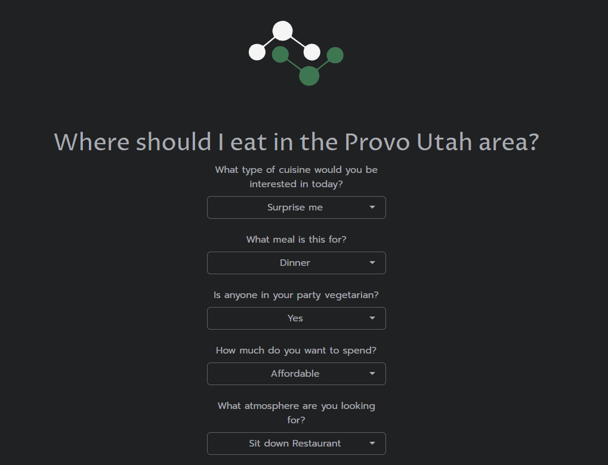

Summary
Every time my wife and I go on a date it is my job to decide where we should go and eat. This has been a struggle since there are so many places to eat near where we live. I created this tool to help us decide where to eat and to help introduce us to new places as well.
This survey is aimed to gather insights into people’s preferences, considerations, and decision-making factors when selecting a dining destination near Provo Utah. By analyzing the responses, we gained valuable information to guide individuals in making informed choices about where to enjoy their meals. We gather data utilizing R on a Shiny application deployed on shinyapps.io. Code for this project is provided in a Github Repository. Insights are then shown on Tableau Public.
In this we consider Cuisine Preferences, Price Range, Atmosphere, and Convenience as we provide recommendations on where to eat. Participants’ preferences varied widely, with cuisine options, dietary considerations, price range, ambience, and recommendations all playing a significant role. By understanding these key factors, individuals can make more informed choices when deciding where to eat, ensuring an enjoyable dining experience that aligns with their preferences and requirements.
Descriptive Analysis
Here we want to find out what the most recommended type of cuisine this tool produces is. As my family begins to use this tool, I would be interested to know what the most popular cuisine suggestion is. To do this we will take the results from the survey being stored in our database and merge them to our CSV of restaurants in the Provo Area. By doing this we can answer the simple question of what Cuisine is most popular?
Analysis on Recommendations
Using GGPLOT and PLOTLY we utilize this relationship to show how many recommendations there have been for each type of Cuisine. We also wanted to know if this representation of what surveyors like is represented in the total distribution of cuisines offered in Provo Utah.
Conclusion
The top Cuisines offered in Provo are American, Asian, and Italian. The top Cuisines recommended by the survey however, are American, Asian, and Mexican. Overall the distribution is very similar the only big difference is shown by other Cuisines being offered more often over Italian. Based on this I might fairly deduce that my family does not like Italian. I look forward to diving deeper into this analysis as more surveys are filled out.
Tools
Github

I utilize GitHub as a way to collaborate with others to show them personal projects and host static websites to view these projects. Within this repo you can view the tools, assets, and code used in this project. Some of which include but are not limited to R Scripts, Tableau Workbooks, Image Files, Data Files, etc… Please feel free to take a look at projects I have listed and test them out for yourself!
Shinyapps

Shinyapp.io is a cloud based platform utilized to host Shiny applications created within R provided by RStudio. Utilization of this platform make deployment of Shiny application easy to deploy, monitor, and scale as this tool grows and changes. The Survey is built within Shinyapp.io and allows for live reporting and the transfer of data between databases. I invite you to try this survey out to discover the different places there are to eat in the Provo Utah area!
Tableau
Tableau Public is a platform created by Tableau for users to share interactive visualizations with a public community. Tableau has been an area where creativity meets data and being able to communicate/present the data in a way that is appealing to others has always been my goal. Here I published a dashboard to show the results of the survey being taken. Please take a look!